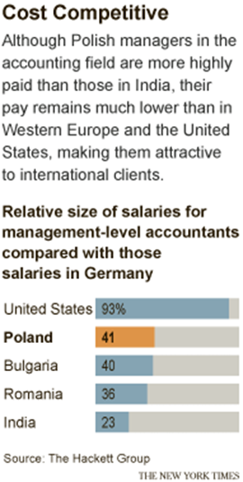
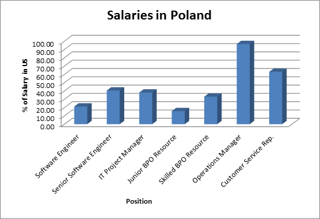

Only a decade or so ago, well-educated Poles and fresh graduates had to venture outside Poland to find jobs in the IT and software development sectors. Now, outsourcing for IT and software development is Poland’s largest employment sector. Even software giants outside the US and Western Europe, like Infosys from India, are shifting projects to Poland.
Poland easily attracts interest because of the low costs associated with operating there. Labor costs in Poland are 50% less than Western Europe. Regional cities like Poznan, Wroclaw, and Krakow have considerably lower rents (about 10 Euro less per square meter) than major cities like Warsaw (Cienski).
It’s no surprise than that service centers are drifting from large secondary cities to more tertiary ones, very unlike other outsourcing countries where offshore centers tend to cluster around capital cities. Fueling thisdrift are large regional business centers outside of Warsaw. These businesses have lower costs because they reside outside the central districts and outsourcing companies can utilize these to save expenditures.
Although Poland has higher labor costs than India, the costs are significantly less compared to hiring in the US or Germany, which proves a major advantage to companies in the US and Western Europe.

The chart above categorizes salaries in Poland as a fraction of US salaries for the same positions catalogued in 2010. While some top-tier positions like Operations Manager earn about the same salary as that in the US, the salaries for Senior Software Engineers or IT Project Managers are less than 50% of the cost that it would be in the US.
In summary, the costs of outsourcing to Poland are significantly less when considering the highly skilled labor available in this country with a stable economy and expanding business sectors.
1. Cienski, Jan. "Outsourcing: Businesses go east to offshore costly services." Global Property Insights. The Financial Times LTD, 23 08 2013. Web. 4 Jan 2014.
2. "Poland." . SourcingLine, n.d. Web. 4 Jan 2014.